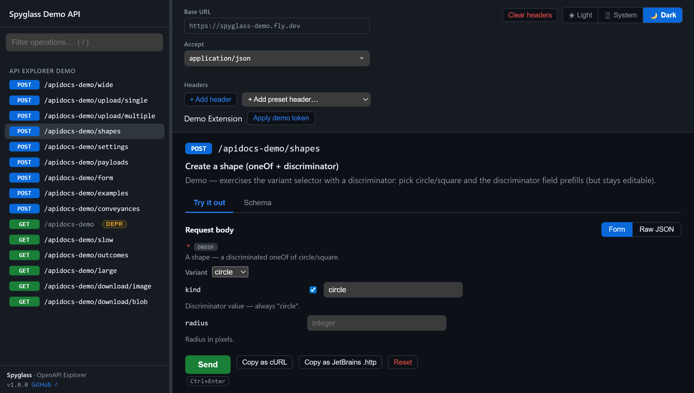

Spyglass
For Spring Boot
Swagger UI
,
replaced.
An embeddable, no-build OpenAPI explorer for Spring Boot. One dependency, no npm.
Spring MVC + WebFlux
Maven Central
MIT
/apidocs
drop
screenshot.png
here
(see capture recipe)
